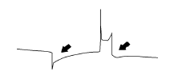
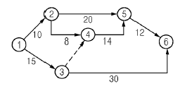
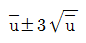
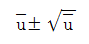
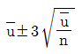
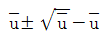

자동차정비기능장 (2007-04-01 기출문제)
1과목: 임의구분
1. 디젤기관의 연소실 형식에서 열효율이 높고 연료소비율이 가장 적으며, 시동이 비교적 용이한 연소실은?
- 예연소실식
- 직접분사실식
- 와류실식
- 공기실식
(정답률: 75%)

2. 흡입 공기량을 직접 검출하는 에어 플로미터(A.F.M)에 속하는 것이 아닌 것은?
- 칼만 볼텍스식(Karman Voltex Type)
- 베인식(Vane Type)
- 핫 와이어식(Hot Wire Type)
- 맵 센서식(Map Sensor Type)
(정답률: 81%)
3. 디젤기관 연료 분사장치를 설명한 것 중 잘못 설명된 것은 어느 것인가?
- 연료분사 요건은 적당한 무화, 분포, 관통력이다.
- 딜리버리 밸브는 노즐의 분사 단절을 좋게 하여 후적을 방지한다.
- 플런저의 길이 홈과 리드는 분사량을 조정한다.
- 분사시기가 늦으면 역회전하며 분사시기가 빠르면 기관 출력이 저하한다.
(정답률: 81%)
4. 다음 중에서 일산화탄소(CO) 및 탄화수소(HC)의 배출을 감소시키기 위한 장치는?
- 2차 공기 공급장치
- 블로바이 가스 환원장치
- EGR장치
- 리드 밸브 장치
(정답률: 64%)
5. 노즐에서 분사되는 연료의 입자 크기에 관한 설명 중 알맞은 것은?
- 노즐 오리피스의 지름이 크면 연료의 입자 크기는 작다.
- 배압이 높으면 연료의 입자 크기는 커진다.
- 분사압력이 높으면 연료의 입자 크기는 커진다.
- 공기온도가 낮아지면 연료의 입자 크기는 커진다.
(정답률: 72%)
6. 연소속도의 지연이 1/500초이고 기관의 회전수가 3000rpm일 때 상사점 전 몇 도에서 점화가 이루어지는가?(단, 기계적 전기적 지연 동안의 크랭크축의 회전각도는 1°̊이며, 기관의최대 폭발압력은 TDC에서 일어난다.)
- 35°
- 36°
- 37°
- 39°
(정답률: 61%)
7. 가솔린 기관에서 연료분사장치를 사용할 때의 장점에 해당되지 않는 것은?
- 체적효율이 증대된다.
- 소기에 의한 연료손실이 없다.
- 역화의 염려가 없다.
- 증기 폐쇄가 발생시 연료 분사량이 정확하다.
(정답률: 79%)
8. 터보차저시스템에서 엔진을 급가속하면 펌핑된 다량의 공기는 배출가스의 양을 증가시키게 되고, 이 배출가스의 증가는 다시 흡입공기의 양을 증가시키는 일을 반복하게 되어 기관출력이 급속히 증가하여 통제가 안되는 상황에 이를 수도 있게 된다. 따라서 배출가스의 양을 통제하는 기능이 필요하게 되어 밸브를 설치하는데 이 밸브를 무엇이라고 하는가?
- 서모밸브
- 터보밸브
- 캐니스터 밸브
- 웨스트게이트밸브
(정답률: 92%)
9. 기관에서 피스톤의 구비조건으로 맞지 않는 것은?
- 열전도율이 커서 방열작용이 좋으며, 열팽창이 적어야 한다.
- 관성의 영향을 크게 하기 위하여 되도록 무거워야 한다.
- 헤드 부분은 폭발압력에 견딜 수 있도록 충분한 강성을 가져야 한다.
- 실린더의 마멸이 적으며 가스 누출을 막기 위한 기밀장치가 있어야 한다.
(정답률: 95%)
10. 4행정 사이클 기관에서 행정 체적 Vs =1600cm3, 제동마력 Ne = 70PS, 회전수 n = 4500rpm일 경우 제동평균 유효압력 Pme 은 몇kgf/cm2 인가?
- 7.75
- 8.75
- 9.75
- 10.75
(정답률: 23%)
11. C.I Engine(Compression Ignition 기관)에서 압력 상승률이 가장 큰 연소 구간은?
- 착화 지연기간
- 급격 연소기간
- 제어 연소기간
- 후 연소기간
(정답률: 57%)
12. 가연성 증기에 화염을 가까이 했을 때 순간적으로 불꽃에 의하여 불이 붙는 최저온도를 무엇이라고 하는가?
- 연소점
- 착화점
- 인화점
- 비등점
(정답률: 77%)
13. 4행정 사이클 기관의 구조가 스퀘어 스트로크 엔진(square stroke engine) 이며, 실제 흡입 공기량이 1117.5cc일 때 체적효율은 몇% 인가? (단, 실린더 수는 4개이며, 행정은 78mm이다.)
- 80
- 75
- 70
- 65
(정답률: 52%)
14. 2행정 사이클 기관과 4행정 사이클 기관의 비교이다. 이들 중 2행정 사이클 기관의 장점은?
- 연료 소비량이 적다.
- 흡ㆍ배기 작용이 완전히 구분되어 있다.
- 저속 운전에 적합하다.
- 마력당 중량이 적다.
(정답률: 52%)
15. 자동차 기관용 부동액으로 적당하지 않은 것은?
- 메탄올
- 글리세린
- 에틸렌글리콜
- 수산화나트륨
(정답률: 90%)
16. 커먼레일 기관의 크랭킹시 레일압력 조절밸브의공급전원이 0[V]일 때 나타나는 증상은?
- 시동안됨
- 가속불량
- 매연 과다발생
- 아이들(idle) 부조
(정답률: 95%)
17. 전자제어식 LPG 엔진의 믹서를 점검하는 방법을 설명한 것이다. 틀린 것은?
- 메인듀티 솔레노이드밸브, 슬로우 듀티 솔레노이드 밸브, 시동솔레노이드 밸브의 각 단자저항을 측정하여 저항이 규정값 내에 들어있으면 양호하다고 판정할 수 있다.
- 슬로우 듀티 솔레노이드 밸브는 단자에 배터리 전원을 인가했을 때 통로가 연결되고, 전원을 OFF 했을 때 차단되면 정상이라고 할 수 있다.
- 시동솔레노이드 밸브는 단자에 배터리 전원을 OFF 하면 플런저는 작동을 멈추고, 슬로우 듀티 솔레노이드의 통로가 연결되면 정상이다.
- 시동솔레노이드 밸브는 단자에 배터리 전원을 인가했을 때 플런저가 작동되면 정상이다.
(정답률: 63%)
18. 점화장치의 파형을 분석한 그림이다. 그림과 같은 점화 2차 파형에서 화살표 부분의 스파크라인 감쇄진동부가 없는 경우 고장 분석을 맞게 표현한 것은?

- 스파크라인의 케이블 불량이다.
- 점화플러그의 손상으로 누전된다.
- 점화코일의 불량이다.
- 점화플러그 간극이 크다.
(정답률: 77%)
19. 다음 중 절차계획에서 다루어지는 주요한 내용으로 가장 관계가 먼 것은?
- 각 작업의 소요시간
- 각 작업의 실시 순서
- 각 작업에 필요한 기계와 공구
- 각 작업의 부하와 능력의 조정
(정답률: 77%)
20. 그림과 같은 계획공정도(Network)에서 주공정으로 옳은 것은?(단, 화살표 밑의 숫자는 활동시간[단위:주]을 나타낸다.)

- ① - ② - ⑤ - ⑥
- ① - ② - ④ - ⑤ - ⑥
- ① - ③ - ④ - ⑤ - ⑥
- ① - ③ - ⑥
(정답률: 80%)
2과목: 임의구분
21. 작업자가 장소를 이동하면서 작업을 수행하는 경우에 그 과정을 가공, 검사, 운반, 저장 등의 기호를 사용하여 분석하는 것을 무엇이라 하는 가?
- 작업자 연합작업분석
- 작업자 동작분석
- 작업자 미세분석
- 작업자 공정분석
(정답률: 83%)
22. u 관리도의 공식으로 가장 옳은 것은?




(정답률: 75%)
23. 모집단을 몇 개의 층으로 나누고 각 층으로부터 각각 랜덤하게 시료를 뽑는 샘플링 방법은?
- 층별 샘플링
- 2단계 샘플링
- 계통 샘플링
- 단순 샘플링
(정답률: 92%)
24. 다음 중 관리의 사이클을 가장 올바르게 표시한 것은? (단, A: 조처, C: 검토, D: 실행, P: 계획)
- P - C - A - D
- P - A - C - D
- A - D - C - P
- P - D - C - A
(정답률: 74%)
25. 수동력계의 암의 길이가 772mm, 기관의 회전수가 2200rpm, 동력계 하중이 15kgf 일 경우 제동마력은 몇 ps인가?
- 18.4
- 24.5
- 25.3
- 35.57
(정답률: 22%)
26. 토크 컨버터가 유체 클러치로서 작용할 때 가장 적당한 것은?
- 터빈의 속도가 펌프속도의 5/10 에 도달했을 때
- 펌프속도가 터빈속도의 5/10 에 도달했을 때
- 터빈의 속도가 펌프속도의 8/10 에 도달했을 때
- 펌프속도가 터빈속도의 8/10 에 도달했을 때
(정답률: 81%)
27. 자동변속기의 스톨시험으로 옳지 않은 것은?
- 시험 전 바퀴에 고임목을 설치하고 주차 브레이크를 당겨 놓는다.
- 각 레인지마다 10초 이상씩 모두 측정시험을 실시한다.
- 가속페달을 최대한 밟았을 때의 기관회전속도를 판정한다.
- 스톨속도의 제한 및 판정은 각 회사별 형식에 따라 다른 값을 나타낸다.
(정답률: 68%)
28. 디스크 브레이크의 특징을 설명한 것 중 적당하지 않은 것은?
- 고속에서 사용하여도 안정된 제동력을 발휘한다.
- 안정된 제동력을 얻기가 비교적 어렵다.
- 디스크가 노출되어 회전하므로 방열성이 좋다.
- 마찰면적이 적기 때문에 패드를 압착하는 힘을 크게 하여야 한다.
(정답률: 93%)
29. 자동변속기에서 규정 차속 이상이 되면 펌프 임펠러와 터빈 런너를 기계적으로 직결시켜 미끄럼에 희한 손실을 없게 하고 연비향상과 정숙성 향상을 도모하는 장치는?
- 킥다운 장치(kick down)
- 히스테리시스장치
- 펄스 제네레이션 장치
- 록업(Lock up)장치
(정답률: 71%)
30. FR(후축 구동)형식 자동차의 동력전달 순서가 맞는 것은?
- 클러치 - 변속기 - 종감속 및 차동장치 - 추진축 - 차축 - 바퀴허브
- 클러치 - 변속기 - 차축 - 종감속 및 차동장치 - 바퀴허브
- 클러치 - 변속기 - 종감속 및 차동장치 -차축 - 바퀴허브
- 클러치 - 변속기 - 추진축 - 종감속 및 차동장치 - 차축 - 바퀴허브
(정답률: 75%)
31. 캠버에 관한 설명 중 틀린 것은?
- 정면에서 보았을 때 차륜 중심선이 수직선에 대해 경사되어 있는 상태를 말한다.
- 정(+)의 캠버란 차륜 중심선의 위쪽이 안으로 기울어진 상태를 말한다.
- 정(+)의 캠버는 직진성을 좋게 한다.
- 부(-)의 캠버는 커브 주행시 선회력을 증가시킨다.
(정답률: 71%)
32. 자동차의 중량 및 하중분포를 측정하는 조건으로 맞지 않는 것은?
- 자동차는 공차 또는 적차 상태를 각각 측정한다.
- 연결자동차는 연결한 상태로 측정한다.
- 공차상태의 중량 분포로서 적차상태의 중량 분포를 산출하기가 어려울 때에는 공차상태만 측정한다.
- 측정단위는 kgf 으로 한다.
(정답률: 53%)
33. 기어 오일의 필요한 조건을 설명한 것이다. 틀린 것은?
- 내하중성, 내마모성이 뛰어날 것
- 점도가 높고, 온도에 따른 점도변화가 있을 것
- 산화안정성이 뛰어날 것
- 거품이 적고, 거품제거성능이 우수할 것
(정답률: 78%)
34. ABS 시스템에서 스피드센서에 의해 4륜 각각의 차륜속도 및 차륜 감가속도를 연산하여 차륜의 슬립상태를 판단하며 각종 솔레노이드 밸브에 대한 증압 및 감압형태를 결정하는 부품은?
- 모터 및 펌프(MOTOR & PUMP)
- ABS ECU
- 하이드롤릭 밸브
- EBD
(정답률: 82%)
35. 액티브(Active) 전자제어 현가장치와 관련된 구성부품이 아닌 것은?
- 인히비터 스위치
- 액셀 포지션 센서
- ECS 모드 선택 스위치
- 클러치 스위치
(정답률: 74%)
36. 타이어 공기압 부족 경보 장치의 설명으로 틀린 것은?
- 타이어 공기압이 부족하면 타이어 직경이 작아진다.
- 타이어 직경이 작아지면 차륜속도 센서의 출력 값이 감소한다.
- 타이어 공기압이 부족으로 판단되면 경고등을 점등한다.
- 차륜속도 센서의 출력 값이 증가하면 공기압 부족으로 판단한다.
(정답률: 56%)
37. 차량의 급브레이크 또는 코너링시에 발생되는 타이어 트레드 고무와 노면상의 미끄럼에 의한 소음을 무엇이라 하는가?
- 펌핑(pumping) 소음
- 트레드(tread) 충돌소음
- 카커스(carcase) 진동소음
- 스퀼(squeal) 소음
(정답률: 77%)
38. 하중이 2ton이고 압축스프링 변형량이 2cm일 때 스프링 상수는 얼마인가?
- 100 kgf/mm
- 120 kgf/mm
- 150 kgf/mm
- 200 kgf/mm
(정답률: 80%)
39. 자동차의 회전 조작력을 측정하려고 한다. 적합하지 않은 것은?
- 좌, 우로 선회하면서 조향력을 측정할 것
- 평탄한 노면에서 반경 12m 원주를 선회할 것
- 선회속도는 10km/h로 할 것
- 공차상태에서 표준공기압으로 할 것
(정답률: 53%)
40. 공기식 제동장치 차량에서 다음 조건의 적차상태의 제동률(%)은? (단, 총 제동력 4900 N, 자동차의 질량 1800 kg, 브레이크 공기압력 7.0 bar, 블록킹 한계압력 4.5 bar, 초기압력 0.4 bar)
- 23.6 %
- 36.7 %
- 44.7 %
- 57.1 %
(정답률: 34%)
3과목: 임의구분
41. 공기압 배력 장치의 종류가 아닌 것은?
- 공기 배력 브레이크
- 에어 오버 하이드롤릭 브레이크
- 에어 언더 하이드롤릭 브레이크
- 풀 에어 브레이크
(정답률: 67%)
42. 전자제어 파워 스티어링 장치에 대한 다음 설명 중 틀린 것은?
- 회전수 감응식은 엔진 회전수에 따라 조향력을 변화시킨다.
- 고속에서만 스티어링 휠의 조작을 가볍게 하여 운전자의 피로를 줄인다.
- 차속 감응식은 차속에 따라 조향력을 변화시킨다.
- 파워 스티어링의 조향력은 파워실린더에 걸리는 압력에 의하여 결정된다.
(정답률: 86%)
43. 동력 조향장치의 세프티 첵 밸브(safety check valve)에 대한 역할이다. 잘못된 것은?
- 세프티 첵 밸브는 컨트롤 밸브에 설치되어 있다.
- 세프티 첵 밸브는 엔진의 정지, 오일펌프의 고장 등 유압이 발생할 수 없는 경우 기계적으로 작동이 가능하게 해준다.
- 세프티 첵 밸브는 압력차에 의해 자동으로 열린다.
- 세프티 첵 밸브는 유압계통이 정상일 경우 밸브 시트에서 열려 오일이 잘 통과하도록 되어 있다.
(정답률: 68%)
44. 밸런싱 코일식 연료계에서 계기의 지침과 연료 유닛의 뜨개에 대해 바르게 설명한 것은?
- 연료계기의 지침이 “E"에 위치하면 뜨개에 흐르는 전류는 많아진다.
- 연료가 줄어들면 뜨개의 연료유닛에 흐르는 저항은 작아진다.
- 연료가 없어지면 뜨개에 전류가 많이 흘러 온도는 올라가고 연료 잔량 경고등이 점등한다.
- 연료계기의 지침이 “F"에 위치하면 뜨개의 저항은 작아진다.
(정답률: 68%)
45. 자동차 점화장치에서 점화요구 전압에 영향을 미치지 않는 인자는?
- CO 배출농도
- 압축압력
- 혼합기의 온도
- 자동차의 속도
(정답률: 43%)
46. 4극 발전기를 1800rpm으로 운전할 경우 이 발전기의 주파수(f)는 몇 Hz인가?
- 120
- 450
- 60
- 50
(정답률: 38%)
47. 컨트롤 유닛에서 액추에이터를 구동 할 때는 PWM(주파수변조) 신호를 사용하게 되는데, PWM 기본 주파수를 200 Hz로 선택한 후 12 Volt를 인가했을 때 듀티 50% 이면 가해지는 평균전압은 몇 볼트인가?
- 24
- 8
- 6
- 2
(정답률: 70%)
48. 기동 전동기의 동력전달방식에 속하지 않는 것은?
- 피니언 섭동식
- 벤딕스식
- 전기자 섭동식
- 스프래그식
(정답률: 74%)
49. 교류발전기의 스테이터 결선 방법 중 Y 결선을 설명한 내용이다. 잘못된 것은?
- 각 코일의 한 끝을 공통점에 접속하고 다른 한 끝 셋을 끌어낸 것
- 선간 전압은 각 상전압의 √3 배가 된다.
- 전류를 이용하기 위한 결선 방법이다.
- 저속에서 발생 전압이 높다.
(정답률: 80%)
50. 자동차에서 50m 떨어진 진 거리에서 조도를 측정 하였더니 8 Lx 가 나왔다. 자동차의 전조등에서 광원의 광도는 얼마인가?
- 12500 cd
- 15000 cd
- 20000 cd
- 22000 cd
(정답률: 80%)
51. 냉방장치의 어큐뮬레이터(Accumulator) 기능이 아닌 것은?
- 압축기로 들어가는 냉매 중의 액체상태의 냉매를 분리하여 저장기능
- 냉매 중에 포함된 수분이나 이물질 제거
- 냉매오일 저장기능
- 팽창밸브로 들어가는 냉매 중의 기체상태의 냉매를 분리하여 저장기능
(정답률: 32%)
52. 축전지에서 격리판의 홈이 있는 면이 양극판 쪽으로 끼워져 있는 이유와 가장 거리가 먼 것은?
- 전해액의 확산을 좋게 하기 위하여
- 양극판에 전해액을 원활히 통하도록 하기 위하여
- 양극판의 작용물질이 탈락되는 것을 방지하기 위하여
- 양극판에 산화에 의하여 격리판이 부식되는 것을 방지하기 위하여
(정답률: 44%)
53. 차체에 사용되는 패널 중 볼트 온 패널로 맞는 것은?
- 센터 필러
- 쿼터 패널
- 라커 패널
- 프런트 펜더
(정답률: 63%)
54. 용접 작업 후에 변형이 발생되는 가장 큰 이유는?
- 용착 금속의 수축과 변형
- 용착 금속의 경화
- 용접 이음부의 가공 불량
- 용착 금속의 용착 불량
(정답률: 94%)
55. 다음 차체 변형 교정 작업시 주의할 사항이 아닌 것은?
- 고정 장치를 확실하게 고정한다.
- 인장 체인에 안전 고리를 걸고 작업한다.
- 과도한 압력으로 한 번에 작업한다.
- 차체 인장 방향과 일직선에 서지 않는다.
(정답률: 87%)
56. 압축 공기로 도료를 미립화시키는 권총 같이 생긴 공구로 피도면으로부터 15~30cm 거리에서 도장하는 기구이다. 본문의 설명으로 가장 적당한 것은?
- 스프레이건
- 에어 트랜스포머
- 구도막 샌더기
- 굴곡 시험기
(정답률: 80%)
57. 메탈릭 색상의 조색에서 차체색상보다 도료색상이 어두워 원색도료를 투입하고자 한다. 적당한 조색제는?
- 백색
- 투명 백색
- 회색
- 알루미늄(실버)
(정답률: 83%)
58. 맨 철판에 대한 부착기능, 큰 요철부위의 메움 역할을 위해 적용하는 도료는?
- 워시 프라이머
- 퍼티
- 프라이머-서페이서
- 베이스 코트
(정답률: 70%)
59. 여름철 도장시 잘 발생하는 핀 홀을 예방하기 위한 방법이 아닌 것은?
- 도장 시에 증발 속도가 빠른 시너를 사용한다.
- 세팅 타임을 충분히 준다.
- 도막 두께가 적정하게 올라가도록 작업한다.
- 플래시 타임을 충분히 준다.
(정답률: 72%)
60. 파손된 차체의 수리방법을 결정하는 요소가 아닌 것은?
- 충돌물의 강도
- 충돌물의 속도
- 파손된 패널의 구조
- 인접된 패널의 구조
(정답률: 55%)